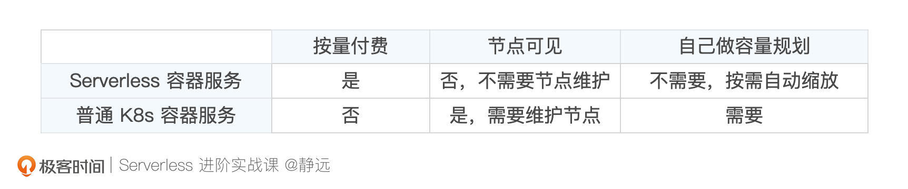
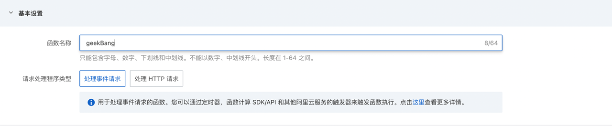
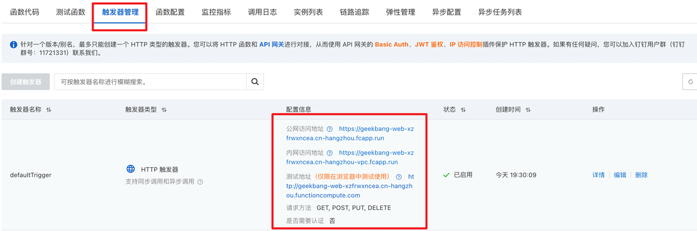
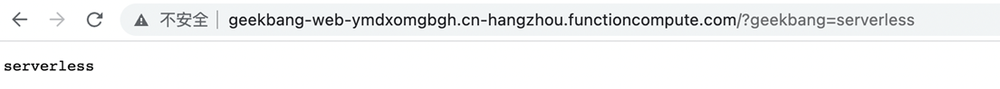
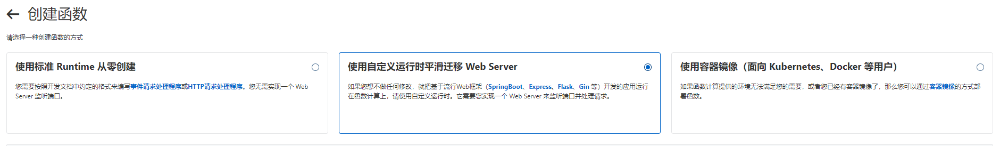
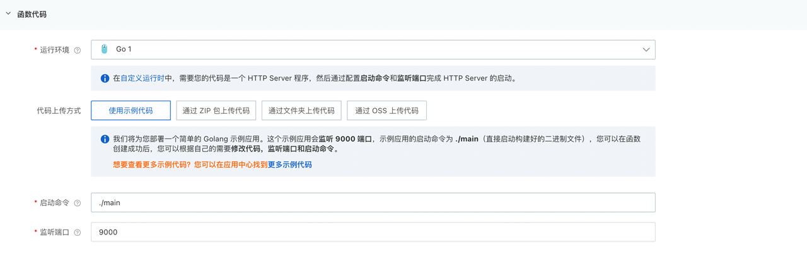
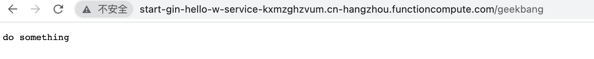

- 00 开篇词 Serverless是降本增效浪潮下的必然选择.md.html
- 00 思维构建 如何在新赛道下进阶Serverless能力？.md.html
- 01 生命周期：函数计算的基本流程是如何执行的？.md.html
- 02 触发器：如何构建事件源与函数计算的纽带？.md.html
- 03 高级属性：应对生产级别的应用，你需要掌握哪些技能？.md.html
- 04 冷启动：如何加快函数的第一次调用过程？.md.html
- 05 扩缩容：如何应对流量的波峰波谷？.md.html
- 06 流量转发：函数在不同情形下是如何执行的？.md.html
- 07 运行时（上）：不同语言形态下的函数在容器中是如何执行的？.md.html
- 08 运行时（下）：不同语言形态下的函数在容器中是如何执行的？.md.html
- 09 小试牛刀（一）：如何利用函数之间的调用解决业务问题？.md.html
- 10 小试牛刀（二）：如何突破VPC网络的速度限制？.md.html
- 11 WebIDE：如何让函数远离繁琐的本地开发模式？.md.html
- 12 编排：如何协调多任务的运行？.md.html
- 13 可观测（上）： 如何构建多维度视角下的Serverless监测体系？.md.html
- 14 可观测（下）： 如何构建多维度视角下的Serverless监测体系？.md.html
- 15 选型：不同阶段的数据应如何存储？.md.html
- 16 动手体验（一）：如何实现业务高效率地开发上线？.md.html
- 17 动手体验（二）：如何在云函数场景下实现一个有状态的服务？.md.html
- 18 实战指南：Serverless沙场老兵的一线使用经验.md.html
- 19 实战进阶（一）：Serverless “连接器” 的能力到底有多大？.md.html
- 20 实战进阶（二）：如何基于智能音箱开发一个BOT技能？.md.html
- 21 实战进阶（三）：传统的服务如何迁移到Serverless平台？.md.html
- 22 私有云：赛马时代的Serverless核心引擎谁能胜出？.md.html
- 23 实战进阶（四）：如何从0到1进阶一个开源引擎？.md.html
- 24 实战进阶（五）：如何从Serverless引擎蜕变成一个Serverless平台？.md.html
- 结束语 在实战中把握事物本质，不断革新.md.html
- 捐赠
21 实战进阶（三）：传统的服务如何迁移到Serverless平台？
你好，我是静远。
今天我们来聊一聊系统架构面临新技术到来的时候该如何思考，以及如何引入新技术。
构建一个新的系统架构，因为没有历史包袱，无论是在技术选型还是在开发部署上都比较方便。但是，“老”的应用服务由于已有的运行业务和原有技术架构的包袱，考虑的事情就比较多了。
Serverless也是如此，它在开发、测试、部署、运维等方面跟传统服务的形态不一样，近些年来，Serverless形态的PaaS产品越来越多，选择合适的业务、通过合适的途径来迭代我们的服务，也成为了一件复杂的工程。
今天这节课，我将结合与客户打交道的沉淀，跟你一起来聊聊传统服务迁移到Serverless技术架构的经验，最后完成一次迁移的实操。希望通过这样的方式，让你在做技术决策的时候，对“用与不用”“自建还是上云”“用一个或多个功能”等等这些细节都有一个相对全面的了解。
你真的需要迁移吗？
通常来说，但凡要做技术改造或者迁移，无非出于以下3个因素。
- 架构：现有的技术架构不足以支撑业务的流量增长，“系统扛不住”了；
- 人员：人手不够，可能是人的数量不够、人的知识储备不够，“人扛不住”了；
- 成本：归根到底，还是“钱扛不住”，尤其是初创公司或是大公司里面的创新团队，业务还没起来，预算就那么多，该怎么办？
那么，只要是遇到这三个问题，就要毫不犹豫地迁移吗？在迁移之前，我建议你先回顾一下实战指南中的选型建议，再沉下心来想清楚两个问题。
第一，这是否是一个盲从的选项？
对业务方同学来说，不管是用云厂商还是企业内部的平台，你的技术栈都是跟着平台走的，极度依赖平台的服务配套和稳定性。也许我们能够快速上线，但却失去了对服务器的管控权。
另一方面，代码也是交出去的，那么，代码和数据安全性的保障问题有后备方案了吗？云厂商也不是没有发生过数据安全故障的问题，这也是如金融银行这类企业都需要私有化部署Serverless平台的核心原因之一。
第二，你的迁移会对技术、业务和团队造成什么影响？
- 技术方面，是整体改造迁移？还是部分改造迁移？还是先在新架构使用，老业务再逐步过渡？
- 业务方面，要从可持续发展的角度衡量，改造一个系统架构，要么使得现有业务在资源耗费上的成本更小（也就是维系现状的同时降低成本），要么以更优的方式支撑流量上涨的业务，否则，改造都是徒劳的。
- 团队方面，人才和知识储备是否足够？遇到问题了可以Hold住吗？
多问几个为什么，也许你就可以在改造Serverless的道路上少走不少坑。想清楚了这些问题，我们就可以开始讨论具体的方案了。
迁往何处？
我们先来说个迁移的例子。现在有一个中小公司的管理网站系统，希望进一步节省网站费用，网站原来部署在云服务托管应用上，访问流量时有时没有。
想一想，面对Serverless形态的容器服务、应用托管服务、函数计算等具象化的产品技术，我们该如何抉择呢？
是否迁移到容器服务？
Serverless的容器服务，跟普通的K8s容器服务的主要区别在于是否按量付费、是否节点可见、是否需要自己来做容量规划。

如果你的服务本来就部署在容器服务上且有弹性诉求，那么迁移到Serverless容器服务也不失为一个明智之举。如果团队K8s的运维经验不是很丰富，那么，就要着重考虑函数计算和弹性应用了。
是否迁移到函数计算服务？
还记得我们在运行时课程中讲到的，函数计算平台支持标准的运行时和自定义运行时吗？下面，我们就针对迁移的初衷，看看如何把运行时“用”起来。
- 标准运行时
云厂商内置的运行时其实已经能够满足大多数业务场景的代码运行了，尤其是不会涉及到复杂交互流程的一些事件驱动场景的迁移。比如离线的机器学习任务，有时仅需要将原本训练逻辑的启动方法放在函数计算入口，即可完成迁移。
下面的一段伪代码可以帮助你理解得更清晰一些。
def handler(event,context):
result = training()
return result
def training:
...
- 自定义运行时和自定义镜像
自定义运行时和自定义镜像是函数计算内置运行时的一种延伸能力，能够为用户提供更加灵活的服务接入模式。
自定义运行时允许用户不必按照严格的事件驱动模型进行编程。也就是说，用户不需要使用handler(event，context)作为函数计算入口定义，可以打造更加个性化的编程环境，比如一些常见的Web 框架，都可以直接在自定义运行时中启动。
相较于自定义运行时，自定义镜像更加自由。它支持将整个环境打包成一个容器镜像的方式部署。
总的来说，这二者都更加适合于一些迁移到常规运行时比较麻烦的场景。比如一些Web 框架有固定的HTTP处理接口，无法再按照标准的事件传参处理。这个时候使用自定义运行时或者自定义镜像，就可以使用一些定制化的服务启动方式来部署了。
除此之外，函数计算的衍生能力也能帮助你处理一些更加复杂的场景，让函数计算应对的场景更加丰富。比如通过函数的连接器能力和异步策略来完成一些音视频转码任务的迁移，通过函数工作流迁移一些状态转换的任务场景等等。一些函数计算服务考虑到业务之间功能的拆分，还提供了应用中心的管理概念。
是否迁移到应用托管服务？
如果你了解微服务在云PaaS上发展的历程，应该不难理解，面向应用的Serverless PaaS平台，就是在原来的微服务PaaS平台基础之上的演进版本，在原有的支持多语言、多框架、微服务治理能力的基础上，提供了全托管、免运维、按需使用、按量计费的特性。
如果你的服务本来就是一个基于类似Springboot、Dubbo、HSF的微服务框架，那么使用云厂商的这种Serverless的产品也是不错的选择。
最后，我来回答一下管理网站系统案例的问题，这位客户对性能要求不高，主要的诉求还是在实例常驻的成本上，而目前Serverless托管服务最小实例为1，不能缩容到0。所以，FaaS对于这样的客户来说比较合适。你自己在做服务改造和迁移的时候，也要把“成本”作为一个不可忽视的因素好好规划一下。
如何迁移？
说完了迁移的考虑和产品技术选型，下面，我们就以Web服务为例，在阿里云函数计算FC上实际感受一下传统服务迁移的过程。我们分别来看简单HTTP的服务迁移和高级Web框架迁移。
HTTP服务迁移
对于一般的简单HTTP服务，通过函数计算提供的HTTP触发器，基于标准的运行时就可以运行起来了。
- HTTP请求是如何到达业务代码的？
Web请求的入参通常都是一个标准的HTTP Request 信息，包括HTTP请求头、传参等，而我们一直所用的云函数在事件触发场景下都是处理一个JSON 类型的事件字符串。因此，Web服务并不能直接套用事件驱动的这套编程模型。
我们在创建函数时就会发现，FC提供了两种请求处理程序的类型，处理事件请求和处理HTTP请求。

其中“处理事件请求”就是我们平时使用最多的事件驱动类型，“处理HTTP请求”则需要在入口方法提供标准的HTTP处理接口。不知道你还记不记得我们在分析GoLang Runtime运行时的时候，提到过一个funcType的分支判断，这里就用得上了。GoLang的运行时会根据函数的类型来选择具体的执行方法，也就是下面这部分运行时代码：
// 运行时中分类处理的逻辑代码
if fn.funcType == eventFunction {
return fn.invokeEventFunc(invokeContext, req.Payload, response)
}
return fn.invokeHttpFunc(invokeContext, req.HttpParams, req.Payload, response)
在处理HTTP请求类型的函数中，需要将函数入口按照定义好的接口实现，这个接口包括了请求信息、响应信息以及上下文信息，比如FC官方SDK中给的HTTP函数Demo：
func HandleHttpRequest(ctx context.Context, w http.ResponseWriter, req *http.Request) error {
w.WriteHeader(http.StatusOK)
w.Header().Add("Content-Type", "text/plain")
w.Write([]byte("hello, world!\n"))
return nil
}
在invokeHttpFunc中，最终会通过透传的方式，将HTTP请求内容直接交到你刚才定义的这个方法中，即HandleHttpRequest，对应下面代码中的httpHandler：
// 运行时中执行http handler的逻辑
func (fn *Function) invokeHttpFunc(invokeContext context.Context, httpParams *string,
reqPayload []byte, response *messages.InvokeResponse) error {
...
err = fn.httpHandler.Invoke(invokeContext, resp, req)
...
}
这样，我们就完成了一次完整的HTTP请求传递过程。
- 动手体验
那么接下来，我们就要开始简单HTTP服务的迁移了。我们以Golang Runtime运行时为基础来创建函数，使用官方的示例代码作为参考。选定请求处理程序类型为“处理HTTP请求”。平台会自动为你创建一个HTTP触发器，我们可以点击触发器管理查看：

需要注意一下，如果你需要公网访问，还需要点击编辑配置域名。
最后我们更新一下代码。我这里是将请求中的geekbang query 参数打印到了响应信息中，在具体的迁移时，你也可以在获取到请求信息后根据实际需求处理业务，如下面代码中注释的函数doSomething()一样：
package main
import (
"context"
"net/http"
"github.com/aliyun/fc-runtime-go-sdk/fc"
)
func main() {
fc.StartHttp(HandleHttpRequest)
}
// func doSomething(){}
func HandleHttpRequest(ctx context.Context, w http.ResponseWriter, req *http.Request) error {
w.WriteHeader(http.StatusOK)
w.Header().Add("Content-Type", "text/plain")
w.Write([]byte(req.URL.Query().Get("geekbang")))
//doSomething()
return nil
}
然后编译、打包上传。最后的效果如下：

高级Web框架迁移
前面我们提到，如果你的老应用服务是基于高级的服务框架进行的，那么可以通过自定义运行时、自定义镜像、弹性应用这些更“自由”的服务模式来迁移。
以阿里函数计算FC为例，官方就推荐采用自定义运行时的方式来进行高级的框架迁移：

我们以Golang中常用的Gin框架为例，选择自定义运行时创建，运行环境选择Go，同时选择示例代码。

完成创建后，我们开始用Gin编写一段代码。你可以参考我的示例，在Gin中，通过自定义的方法来对请求进行处理，我这里定义了一个geekHandler处理访问/geekbang路径的请求：
package main
import (
"net/http"
"github.com/gin-gonic/gin"
)
func main() {
router := gin.Default()
router.LoadHTMLGlob("templates/*")
router.GET("/geekbang", geekHandler)
router.Run(":9000")
}
func geekHandler(c *gin.Context) {
c.String(http.StatusOK, "do something")
}
你会发现，这和你原本服务的代码形式几乎没有什么区别，在实际迁移时，如果你本身的服务采用的是Gin框架，甚至只需要在控制台配置一下启动命令，就可以几乎原封不动地将二进制部署上去，是不是很方便呢？
本地编写完成后，就需要编译然后将二进制打包上传了。这里要注意的是，在前面创建函数的部分，我们采用的是默认的启动命令./main，那么你的二进制产出也需要和它对应。当然，你也可以指定一个产出名，如果你是用非Linux 环境编写的话，还需要在本地采用交叉编译的方式进行编译：
GOOS=linux GOARCH=amd64 go build -o main main.go
如上面的代码所示，GOOS和GOARCH会指定Linux操作系统与amd64架构，而-o 可以用来指定产出，最后的参数是待编译的文件。
最后部署完成以后，我们来看一下实际的运行效果：

回想一下管理网站系统案例的场景，如果还涉及到自定义的域名，还可以通过FC的控制台，通过“域名管理”的能力，进一步添加自定义域名。又或者，你还可以将该自定义域名作为源站域名，为其添加加速域名，然后为加速域名配置CNAME，也就是域名设置CDN加速功能。
效果评估
管理网站系统其实是一个真实的案例。通过从原来常驻的资源应用迁移到Serverless函数计算，客户的费用降低了10倍。相信现在的你已经能够想清楚原因了：他的服务属于中长尾应用，按需付费极大地降低了客户的成本。
那么，我们是否有一个通用的准则来评估迁移的效果呢？回到开头，但凡要做技术改造或者迁移，无非出于架构、人员、成本三个主要因素。除去这三个方面，迁移后的架构，还可以通过测试系统的弹性和抗洪峰等能力来评估其是否真正得到了增强。
我们的做法通常是在上生产环境、对外放开流量之前，通过全链路压测的方式尽可能仿真线上的流量升降情况，来看资源池的调度、请求并发和响应等是否符合预期。这里需要注意一下，有的云厂商默认的函数和用户维度的并发度有限，如果流量超过默认限制，还需要提前发工单提升配额。
具体来说，基于Serverless平台的特性，你的压测可以从三个点着手。
- 全链路：针对链式调用，你不能只关注某一个函数的压测结果，想一想，整条链路里有没有瓶颈存在？
- 模拟真实：尽可能贴近业务，测试平台的资源调度是否跟得上你的诉求。不同的厂商优化的参数可能不同，你选择的云厂商平台是否可以胜任呢？
- 高覆盖：尽可能多地覆盖流程分支，在上线之前发现潜在的问题。
除此之外，我们还可以关注一下团队的人员是否更高效，最终的体现，一定是原本的预算足够应对流量的上涨了。
小结
好了，以上就是传统服务迁移的全部内容。相信你现在对迁移涉及到的四件事情也非常清楚了：想清楚要不要迁移，迁到哪类Serverless的平台，改造方法和成本以及迁移效果评估。那我们该如何将这四个要点落实到日常的业务处理中呢？
在是否迁移方面，我们今天提到的案例是出于财务压力，考虑到客户的业务比较轻量，几乎没有改造成本，就非常适合迁移到函数平台。而你可以从是否要将控制权交给云厂商、业务是否符合Serverless特性、架构改造成本、团队技术储备等多个方面考量。
在迁移到哪类平台方面，就需要你深入了解云厂商Serverless形态的产品了。今天比较主流的Serverless容器、函数、应用托管服务，明天可能又会新增更多的Serverless产品出来，而我们能做的，就是找到业务、架构与产品形态三者的最佳匹配状态。比如，如果你使用了Springboot、Dubbo框架，需要服务治理的能力，那么Serverless的应用托管服务，如SAE这类产品就是你应该考虑的首选。
在改造成本和方法上，云厂商都提供了不错的迁移适配能力，你可以通过开发工具实现Java、Node.js、Python等各种语言框架的迁移。这里要注意的是，虽然你可以通过改造代码以及HTTP触发器来实现低成本的迁移，但是，我们大部分情况下都是基于某种框架来开发的Web服务，所以我更建议你使用自定义运行时的方式迁移。如果你想完全控制容器运行的环境，那么镜像的迁移方式也是不错的。
最后，别忘了你迁移的初衷，记得做效果的评估。你可以通过架构、人力、成本这迁移三要素来评估，从Serverles的角度，一切都可以从“降本”“增效”这两个关键词出发，考量迁移是否达到了你的预期效果。
思考题
好了，这节课到这里也就结束了，最后我给你留了一个思考题。
你有没有准备要迁移的服务呢？你做了哪些技术调研？有遇到什么卡点么？
欢迎在留言区写下你的思考和答案，我们一起交流讨论。
感谢你的阅读，也欢迎你把这节课分享给更多的朋友一起交流学习。
© 2019 - 2023 Liangliang Lee. Powered by gin and hexo-theme-book.